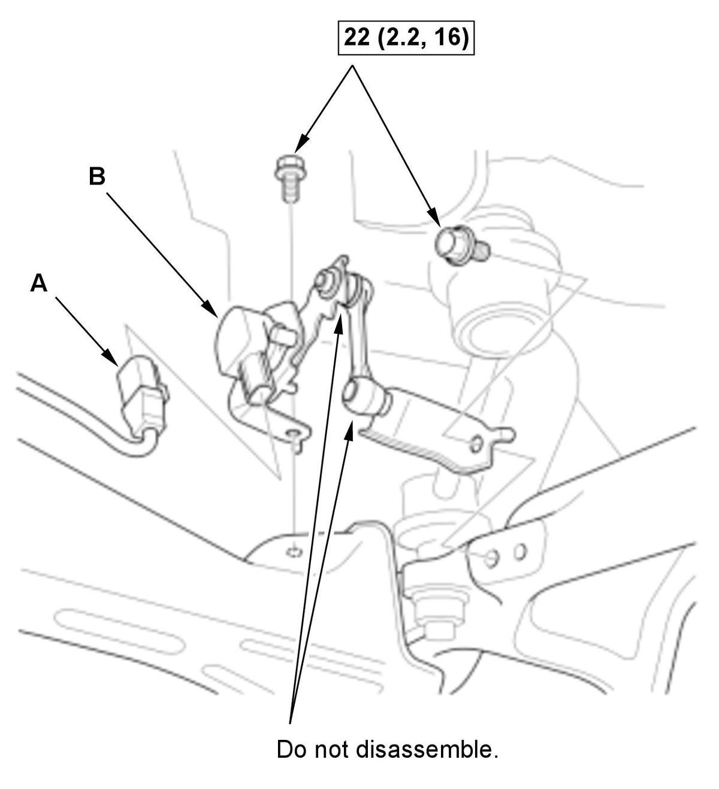
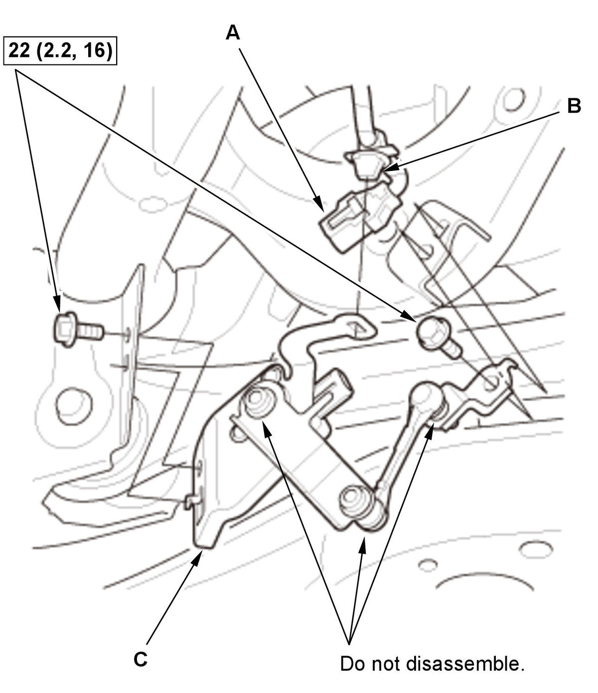

Removal and Installation
NOTE: How to read the torque specifications .
Front
- Vehicle - Lift
- Engine Undercover - Remove
- Front Suspension Stroke Sensor - Remove

Courtesy of HONDA, U.S.A., INC.1. Disconnect the connector (A). 2. Remove the front suspension stroke sensor (B).
- All Removed Parts - Install
1. Install the parts in the reverse order of removal.
Rear
- Vehicle - Lift
- Rear Suspension Stroke Sensor - Remove

Courtesy of HONDA, U.S.A., INC.1. Disconnect the connector (A). 2. Remove the harness clip (B).
3. Remove the rear suspension stroke sensor (C).
- All Removed Parts - Install
1. Install the parts in the reverse order of removal.